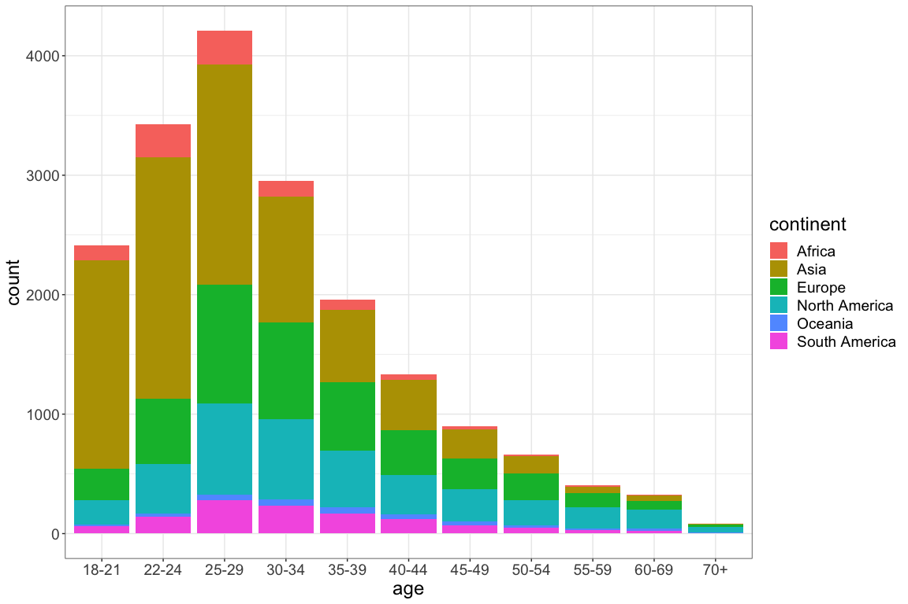

Analysis of 2019 Kaggle ML & DS Survey
2020-01-16
Chapter 1 Introduction
This is an analysis based on Kaggle survey data, details are at https://www.kaggle.com/c/kaggle-survey-2019
The survey received 19,717 usable respondents from 171 countries and territories. If a country or territory received less than 50 respondents, they were grouped and named “Other” for anonymity.
The survey was live from October 8th to October 28th 2019.
The median response time for those who participated in the survey was approximately 10 minutes.
An overview of the world wide participation is given in the map below. The first three countries are
- India
- USA
- Brazil

All numbers of all countries are given in the interactive table below. To find a specific country, type the name in the search field. Surprising facts:
- Almost as many participants from Saudi Arabia (50) and Norway (51)
- Peru (74) higher than Belgium (70)
- Iran (96) higher than Sweden (92)
The word frequency gives shows that software engineers and data scientist are heavily involved the field of machine learning
Easy histogram plots of all questions can be created in R as shown at https://www.kaggle.com/paultimothymooney/how-to-explore-the-2019-kaggle-survey-data
1.1 Purpose
The purpose of the survey analysis is to create insight into which
- algorithms
- tools
- platforms
are used in the field of machine learning. Contrary to public opinion machine learning is not mainly focused on neural networks.
1.2 Results
The results are presented by graphs relating parameters either vs time or vs other parameters.